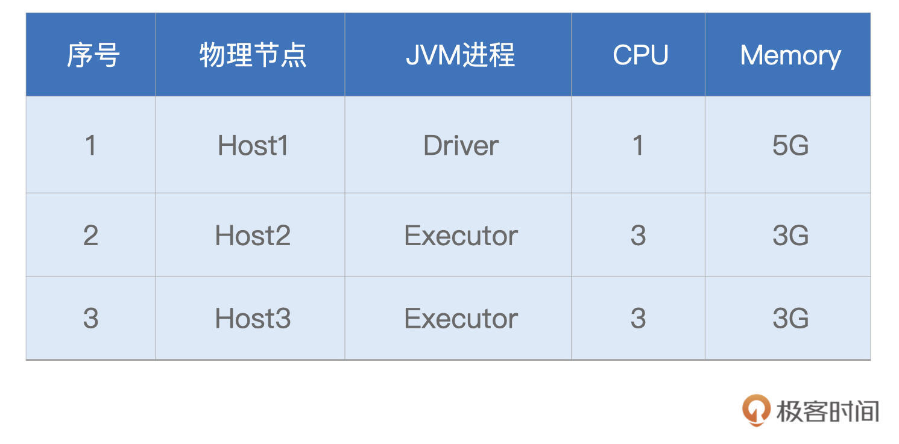
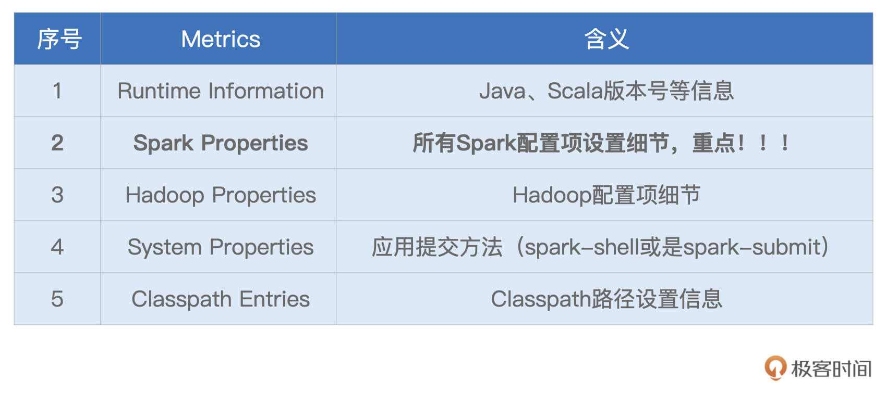

- 00 开篇词 入门Spark，你需要学会“三步走”.md
- 01 Spark：从“大数据的Hello World”开始.md
- 02 RDD与编程模型：延迟计算是怎么回事？.md
- 03 RDD常用算子（一）：RDD内部的数据转换.md
- 04 进程模型与分布式部署：分布式计算是怎么回事？.md
- 05 调度系统：如何把握分布式计算的精髓？.md
- 06 Shuffle管理：为什么Shuffle是性能瓶颈？.md
- 07 RDD常用算子（二）：Spark如何实现数据聚合？.md
- 08 内存管理：Spark如何使用内存？.md
- 09 RDD常用算子（三）：数据的准备、重分布与持久化.md
- 10 广播变量 & 累加器：共享变量是用来做什么的？.md
- 11 存储系统：数据到底都存哪儿了？.md
- 12 基础配置详解：哪些参数会影响应用程序稳定性？.md
- 13 Spark SQL：让我们从“小汽车摇号分析”开始.md
- 14 台前幕后：DataFrame与Spark SQL的由来.md
- 15 数据源与数据格式：DataFrame从何而来？.md
- 16 数据转换：如何在DataFrame之上做数据处理？.md
- 17 数据关联：不同的关联形式与实现机制该怎么选？.md
- 18 数据关联优化：都有哪些Join策略，开发者该如何取舍？.md
- 19 配置项详解：哪些参数会影响应用程序执行性能？.md
- 20 Hive + Spark强强联合：分布式数仓的不二之选.md
- 21 Spark UI（上）：如何高效地定位性能问题？.md
- 22 Spark UI（下）：如何高效地定位性能问题？.md
- 23 Spark MLlib：从“房价预测”开始.md
- 24 特征工程（上）：有哪些常用的特征处理函数？.md
- 25 特征工程（下）：有哪些常用的特征处理函数？.md
- 26 模型训练（上）：决策树系列算法详解.md
- 27 模型训练（中）：回归、分类和聚类算法详解.md
- 28 模型训练（下）：协同过滤与频繁项集算法详解.md
- 29 Spark MLlib Pipeline：高效开发机器学习应用.md
- 30 Structured Streaming：从“流动的Word Count”开始.md
- 31 新一代流处理框架：Batch mode和Continuous mode哪家强？.md
- 32 Window操作&Watermark：流处理引擎提供了哪些优秀机制？.md
- 33 流计算中的数据关联：流与流、流与批.md
- 34 Spark + Kafka：流计算中的“万金油”.md
- 用户故事 小王：保持空杯心态，不做井底之蛙.md
- 结束语 进入时间裂缝，持续学习.md
21 Spark UI（上）：如何高效地定位性能问题？
你好，我是吴磊。
到目前为止，我们完成了基础知识和Spark SQL这两个模块的学习，这也就意味着，我们完成了Spark入门“三步走”中的前两步，首先恭喜你！在学习的过程中，我们逐渐意识到，Spark Core与Spark SQL作为Spark并驾齐驱的执行引擎与优化引擎，承载着所有类型的计算负载，如批处理、流计算、数据分析、机器学习，等等。
那么显然，Spark Core与Spark SQL运行得是否稳定与高效，决定着Spark作业或是应用的整体“健康状况”。不过，在日常的开发工作中，我们总会遇到Spark应用运行失败、或是执行效率未达预期的情况。对于这类问题，想找到根本原因（Root Cause），我们往往需要依赖Spark UI来获取最直接、最直观的线索。
如果我们把失败的、或是执行低效的Spark应用看作是“病人”的话，那么Spark UI中关于应用的众多度量指标（Metrics），就是这个病人的“体检报告”。结合多样的Metrics，身为“大夫”的开发者即可结合经验来迅速地定位“病灶”。
今天这一讲，让我们以小汽车摇号中“倍率与中签率分析”的应用（详细内容你可以回顾[第13讲]）为例，用图解的方式，一步步地去认识Spark UI，看一看它有哪些关键的度量指标，这些指标都是什么含义，又能为开发者提供哪些洞察（Insights）？
这里需要说明的是，Spark UI的讲解涉及到大量的图解、代码与指标释义，内容庞杂。因此，为了减轻你的学习负担，我按照Spark UI的入口类型（一级入口、二级入口）把Spark UI拆成了上、下两讲。一级入口比较简单、直接，我们今天这一讲，先来讲解这一部分，二级入口的讲解留到下一讲去展开。
准备工作
在正式开始介绍Spark UI之前，我们先来简单交代一下图解案例用到的环境、配置与代码。你可以参考这里给出的细节，去复现“倍率与中签率分析”案例Spark UI中的每一个界面，然后再结合今天的讲解，以“看得见、摸得着”的方式，去更加直观、深入地熟悉每一个页面与度量指标。
当然，如果你手头一时没有合适的执行环境，也不要紧。咱们这一讲的特点，就是图多，后面我特意准备了大量的图片和表格，带你彻底了解Spark UI。
由于小汽车摇号数据体量不大，因此在计算资源方面，我们的要求并不高，“倍率与中签率分析”案例用到的资源如下所示：

接下来是代码，在[小汽车摇号应用开发]那一讲，我们一步步地实现了“倍率与中签率分析”的计算逻辑，这里咱们不妨一起回顾一下。
import org.apache.spark.sql.DataFrame
val rootPath: String = _
// 申请者数据
val hdfs_path_apply: String = s"${rootPath}/apply"
// spark是spark-shell中默认的SparkSession实例
// 通过read API读取源文件
val applyNumbersDF: DataFrame = spark.read.parquet(hdfs_path_apply)
// 中签者数据
val hdfs_path_lucky: String = s"${rootPath}/lucky"
// 通过read API读取源文件
val luckyDogsDF: DataFrame = spark.read.parquet(hdfs_path_lucky)
// 过滤2016年以后的中签数据，且仅抽取中签号码carNum字段
val filteredLuckyDogs: DataFrame = luckyDogsDF.filter(col("batchNum") >= "201601").select("carNum")
// 摇号数据与中签数据做内关联，Join Key为中签号码carNum
val jointDF: DataFrame = applyNumbersDF.join(filteredLuckyDogs, Seq("carNum"), "inner")
// 以batchNum、carNum做分组，统计倍率系数
val multipliers: DataFrame = jointDF.groupBy(col("batchNum"),col("carNum"))
.agg(count(lit(1)).alias("multiplier"))
// 以carNum做分组，保留最大的倍率系数
val uniqueMultipliers: DataFrame = multipliers.groupBy("carNum")
.agg(max("multiplier").alias("multiplier"))
// 以multiplier倍率做分组，统计人数
val result: DataFrame = uniqueMultipliers.groupBy("multiplier")
.agg(count(lit(1)).alias("cnt"))
.orderBy("multiplier")
result.collect
今天我们在此基础上做一点变化，为了方便展示StorageTab页面内容，我们这里“强行”给applyNumbersDF 和luckyDogsDF这两个DataFrame都加了Cache。对于引用数量为1的数据集，实际上是没有必要加Cache的，这一点还需要你注意。
回顾完代码之后，再来看看配置项。为了让Spark UI能够展示运行中以及执行完毕的应用，我们还需要设置如下配置项并启动History Server。

// SPARK_HOME表示Spark安装目录
${SPAK_HOME}/sbin/start-history-server.sh
好啦，到此为止，一切准备就绪。接下来，让我们启动spark-shell，并提交“倍率与中签率分析”的代码，然后把目光转移到Host1的8080端口，也就是Driver所在节点的8080端口。
Spark UI 一级入口
今天的故事，要从Spark UI的入口开始，其实刚才说的8080端口正是Spark UI的入口，我们可以从这里进入Spark UI。
打开Spark UI，首先映入眼帘的是默认的Jobs页面。Jobs页面记录着应用中涉及的Actions动作，以及与数据读取、移动有关的动作。其中，每一个Action都对应着一个Job，而每一个Job都对应着一个作业。我们一会再去对Jobs页面做展开，现在先把目光集中在Spark UI最上面的导航条，这里罗列着Spark UI所有的一级入口，如下图所示。

导航条最左侧是Spark Logo以及版本号，后面则依次罗列着6个一级入口，每个入口的功能与作用我整理到了如下的表格中，你可以先整体过一下，后面我们再挨个细讲。
形象点说，这6个不同的入口，就像是体检报告中6大类不同的体检项，比如内科、外科、血常规，等等。接下来，让我们依次翻开“体检报告”的每一个大项，去看看“倍率与中签率分析”这个家伙的体质如何。
不过，本着由简入难的原则，咱们并不会按照Spark UI罗列的顺序去查看各个入口，而是按照Executors > Environment > Storage > SQL > Jobs > Stages的顺序，去翻看“体检报告”。
其中，前3个入口都是详情页，不存在二级入口；而后3个入口都是预览页，都需要访问二级入口，才能获取更加详细的内容。显然，相比预览页，详情页来得更加直接。接下来，让我们从Executors开始，先来了解一下应用的计算负载。
Executors
Executors Tab的主要内容如下，主要包含“Summary”和“Executors”两部分。这两部分所记录的度量指标是一致的，其中“Executors”以更细的粒度记录着每一个Executor的详情，而第一部分“Summary”是下面所有Executors度量指标的简单加和。
我们一起来看一下，Spark UI都提供了哪些Metrics，来量化每一个Executor的工作负载（Workload）。为了叙述方便，我们以表格的形式说明这些Metrics的含义与作用。

不难发现，Executors页面清清楚楚地记录着每一个Executor消耗的数据量，以及它们对CPU、内存与磁盘等硬件资源的消耗。基于这些信息，我们可以轻松判断不同Executors之间是否存在负载不均衡的情况，进而判断应用中是否存在数据倾斜的隐患。
对于Executors页面中每一个Metrics的具体数值，它们实际上是Tasks执行指标在Executors粒度上的汇总。因此，对于这些Metrics的释义，咱们留到Stages二级入口再去展开，这里暂时不做一一深入。你不妨结合“倍率与中签率分析”的应用，去浏览一下不同Metrics的具体数值，先对这些数字有一个直观上的感受。
实际上，这些具体的数值，并没有什么特别之处，除了RDD Blocks和Complete Tasks这两个Metrics。细看一下这两个指标，你会发现，RDD Blocks是51（总数），而Complete Tasks（总数）是862。
之前讲RDD并行度的时候，我们说过，RDD并行度就是RDD的分区数量，每个分区对应着一个Task，因此RDD并行度与分区数量、分布式任务数量是一致的。可是，截图中的51与862，显然不在一个量级，这是怎么回事呢？
这里我先买个关子，把它给你留作思考题，你不妨花些时间，去好好想一想。如果没想清楚也没关系，我们在评论区会继续讨论这个问题。
Environment
接下来，我们再来说说Environment。顾名思义，Environment页面记录的是各种各样的环境变量与配置项信息，如下图所示。

为了让你抓住主线，我并没有给你展示Environment页面所包含的全部信息，就类别来说，它包含5大类环境信息，为了方便叙述，我把它们罗列到了下面的表格中。

显然，这5类信息中，Spark Properties是重点，其中记录着所有在运行时生效的Spark配置项设置。通过Spark Properties，我们可以确认运行时的设置，与我们预期的设置是否一致，从而排除因配置项设置错误而导致的稳定性或是性能问题。
Storage
说完Executors与Environment，我们来看一级入口的最后一个详情页：Storage。
Storage详情页，记录着每一个分布式缓存（RDD Cache、DataFrame Cache）的细节，包括缓存级别、已缓存的分区数、缓存比例、内存大小与磁盘大小。
在[第8讲]，我们介绍过Spark支持的不同缓存级别，它是存储介质（内存、磁盘）、存储形式（对象、序列化字节）与副本数量的排列组合。对于DataFrame来说，默认的级别是单副本的Disk Memory Deserialized，如上图所示，也就是存储介质为内存加磁盘，存储形式为对象的单一副本存储方式。

Cached Partitions与Fraction Cached分别记录着数据集成功缓存的分区数量，以及这些缓存的分区占所有分区的比例。当Fraction Cached小于100%的时候，说明分布式数据集并没有完全缓存到内存（或是磁盘），对于这种情况，我们要警惕缓存换入换出可能会带来的性能隐患。
后面的Size in Memory与Size in Disk，则更加直观地展示了数据集缓存在内存与硬盘中的分布。从上图中可以看到，由于内存受限（3GB/Executor），摇号数据几乎全部被缓存到了磁盘，只有584MB的数据，缓存到了内存中。坦白地说，这样的缓存，对于数据集的重复访问，并没有带来实质上的性能收益。
基于Storage页面提供的详细信息，我们可以有的放矢地设置与内存有关的配置项，如spark.executor.memory、spark.memory.fraction、spark.memory.storageFraction，从而有针对性对Storage Memory进行调整。
SQL
接下来，我们继续说一级入口的SQL页面。当我们的应用包含DataFrame、Dataset或是SQL的时候，Spark UI的SQL页面，就会展示相应的内容，如下图所示。

具体来说，一级入口页面，以Actions为单位，记录着每个Action对应的Spark SQL执行计划。我们需要点击“Description”列中的超链接，才能进入到二级页面，去了解每个执行计划的详细信息。这部分内容，我们留到下一讲的二级入口详情页再去展开。
Jobs
同理，对于Jobs页面来说，Spark UI也是以Actions为粒度，记录着每个Action对应作业的执行情况。我们想要了解作业详情，也必须通过“Description”页面提供的二级入口链接。你先有个初步认识就好，下一讲我们再去展开。
相比SQL页面的3个Actions：save（保存计算结果）、count（统计申请编号）、count（统计中签编号），结合前面的概览页截图你会发现，Jobs页面似乎凭空多出来很多Actions。
主要原因在于，在Jobs页面，Spark UI会把数据的读取、访问与移动，也看作是一类“Actions”，比如图中Job Id为0、1、3、4的那些。这几个Job，实际上都是在读取源数据（元数据与数据集本身）。
至于最后多出来的、Job Id为7的save，你不妨结合最后一行代码，去想想问什么。这里我还是暂时卖个关子，留给你足够的时间去思考，咱们评论区见。
result05_01.write.mode("Overwrite").format("csv").save(s"${rootPath}/results/result05_01")
Stages
我们知道，每一个作业，都包含多个阶段，也就是我们常说的Stages。在Stages页面，Spark UI罗列了应用中涉及的所有Stages，这些Stages分属于不同的作业。要想查看哪些Stages隶属于哪个Job，还需要从Jobs的Descriptions二级入口进入查看。

Stages页面，更多地是一种预览，要想查看每一个Stage的详情，同样需要从“Description”进入Stage详情页（下一讲详细展开）。
好啦，到此为止，对于导航条中的不同页面，我们都做了不同程度的展开。简单汇总下来，其中Executors、Environment、Storage是详情页，开发者可以通过这3个页面，迅速地了解集群整体的计算负载、运行环境，以及数据集缓存的详细情况；而SQL、Jobs、Stages，更多地是一种罗列式的展示，想要了解其中的细节，还需要进入到二级入口。
正如开篇所说，二级入口的讲解，我们留到下一讲再去探讨，敬请期待。
重点回顾
好啦，今天的课程，到这里就讲完啦。今天的内容比较多，涉及的Metrics纷繁而又复杂，仅仅听一遍我的讲解，还远远不够，还需要你结合日常的开发，去多多摸索与体会，加油！
今天这一讲，我们从简单、直接的一级入口入手，按照“Executors -> Environment -> Storage -> SQL -> Jobs -> Stages”的顺序，先后介绍了一级入口的详情页与概览页。对于这些页面中的内容，我把需要重点掌握的部分，整理到了如下表格，供你随时参考。

每课一练
今天的思考题，我们在课程中已经提过了。一个是在Executors页面，为什么RDD Blocks与Complete Tasks的数量不一致。第二个是，在Jobs页面，为什么最后会多出来一个save Action？
欢迎你在留言区跟我交流探讨，也欢迎推荐你把这一讲分享给有需要的朋友、同事。
© 2019 - 2023 Liangliang Lee. Powered by Vert.x and hexo-theme-book.